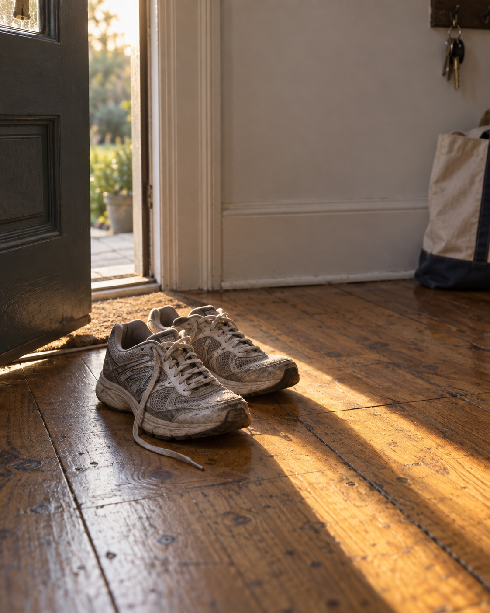

Run
30 weeks kept
3 a week
2 of 3 this week
On track
Kept is a habit tracker that counts weeks, not days. Set a target like three runs a week, hit it on any days, and the week is kept.
Run has a missed Tuesday and is still on track. Tap Thursday on the phone to keep the week.
Thursday 8 October
30 weeks kept
3 a week
2 of 3 this week
On track
12 weeks kept
5 a week
3 of 5 this week
On track
4 weeks kept
5 a week
1 of 5 this week
At risk
Kept counts weeks, not days. Hit your target on any days and the week is kept. Miss a day and nothing resets; the tally just keeps growing.
31 weeks kept
Missed Tuesday. Ran Wednesday, Friday and Saturday instead. Kept.
Missed Monday and Tuesday. Ran Thursday, Friday and Sunday. Kept.
Travelling. Ran Friday, then Saturday and a hike on Sunday. Kept.
No daily nagging. Kept stays silent while you are on track, and speaks once in the evening when a week is slipping.
Sick or travelling? Pause the week. It will not count, and it will not break anything.
Paused
Mon 12 to Sun 18 October
Connect Apple Health and runs, walks and workouts tick the right day by themselves.

I missed a Tuesday in April and it just said on track. Any other app and I would have deleted it by Wednesday.
Track three habits for free, as long as you like. Kept Plus adds unlimited habits and the extras.
$0forever
No card needed
$29a year
or $3.99 a month
Monday to Sunday by default. If your week starts on Sunday, change it in Settings and your history moves with it.
Yes. Set the target to seven a week and every day counts. Most people start with three or four and raise it later.
Nothing is deleted. Your three most recent habits stay active on Free, and the rest are archived with their full history, ready if you come back.
Yes. Health sync is optional. Without it you tick days off yourself, one tap each.
Free on iPhone. Pick a habit, pick a target, and let the week do the counting.
Download for iPhone